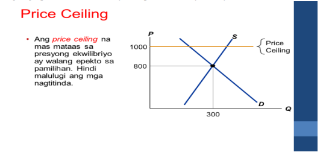
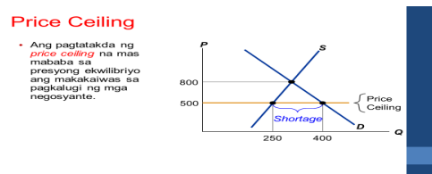
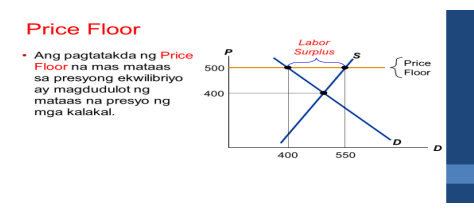
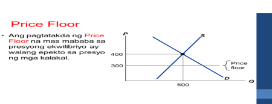

Ang price ceiling ay isang polisiya na itinatakda ng pamahalaan upang kontrolin ang pinakamataas na presyo na maaaring ipataw ng mga prodyuser sa mga kalakal at serbisyo, lalo na ang mga pangunahing pangangailangan.
Ang price floor ay isang polisiya kung saan itinakda ng pamahalaan ang pinakamababang presyo ng mga kalakal at serbisyo, karaniwang ginagamit ito upang protektahan ang mga prodyuser.
 
 